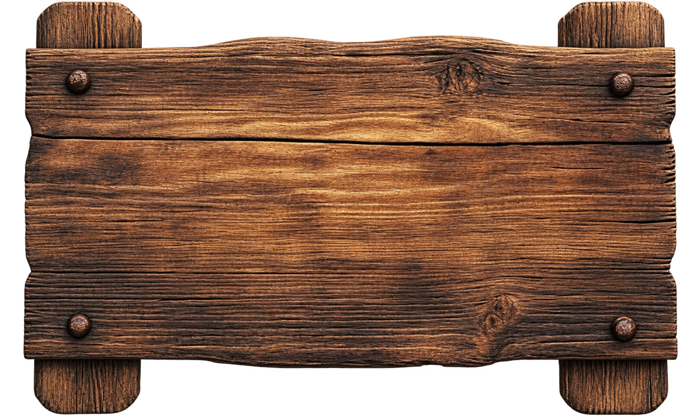
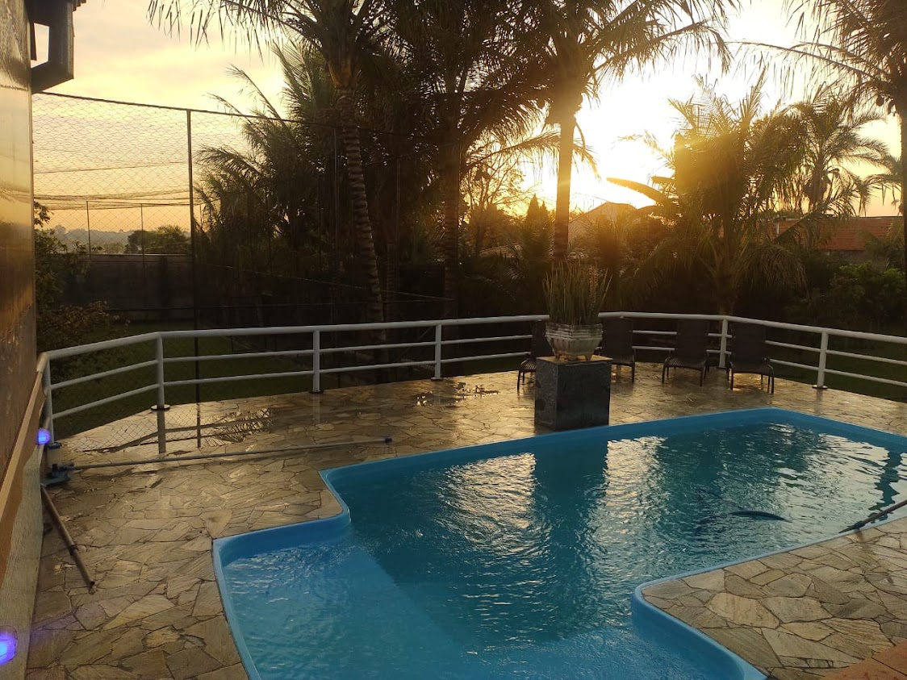
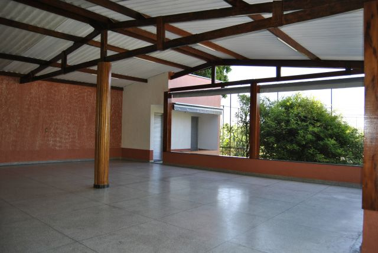
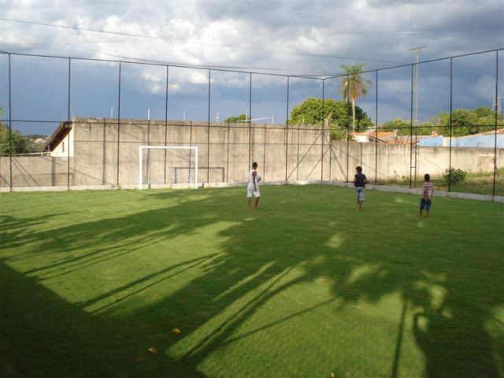
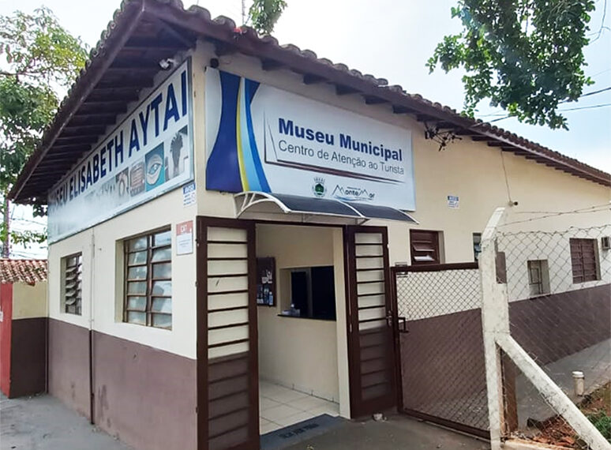
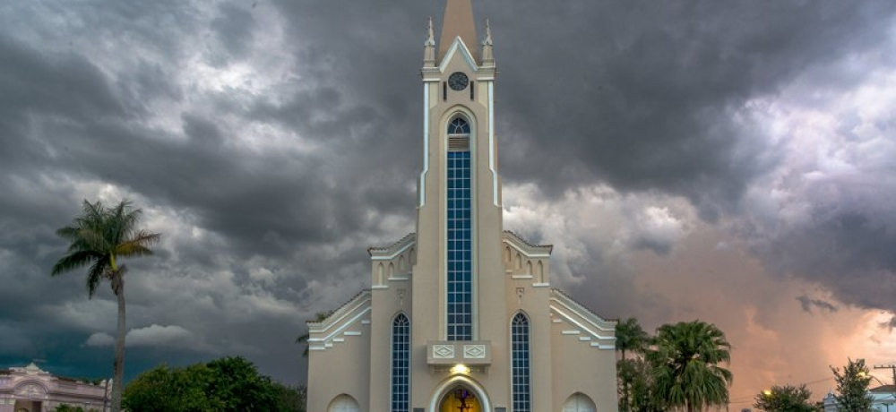
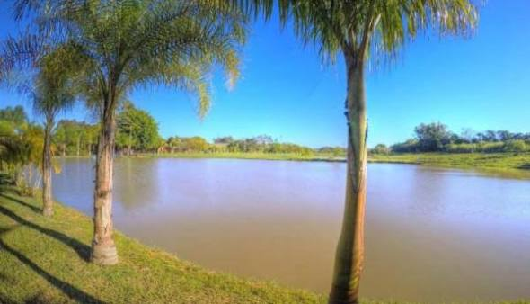
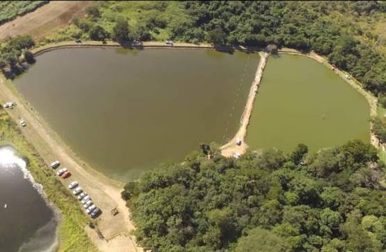
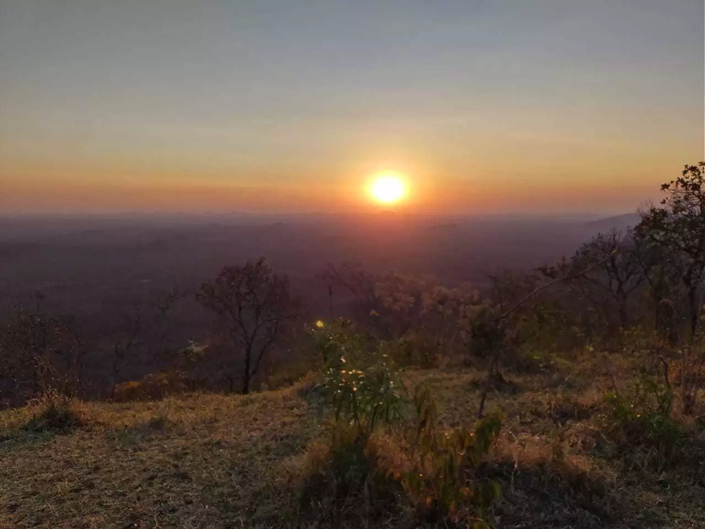
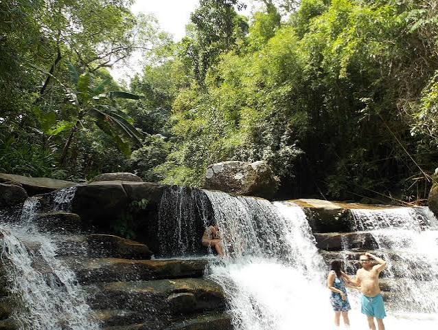

Chácara Vô Roberto
Um lugar tranquilo para descansar e aproveitar a natureza em Monte Mor- SP
Entre em contato

Um lugar tranquilo para descansar e aproveitar a natureza em Monte Mor- SP
Entre em contatoA Chácara Vô Roberto fica na zona rural de Monte Mor, no interior de São Paulo, perto de Campinas. É um lugar feito para passar um tempo com a família e os amigos, descansar e aproveitar a natureza. Você pode virpara passar o dia, o fim de semana ou ficar por mais tempo.
Área verde e pomar
Piscina com deck
Fogueira e churrasqueira
Estacionamento próprio
Wi-Fi na sede
Café da manhã caseiro
Cada espaço da chácara foi pensado para deixar sua estadia mais confortável.

8 a 10 pessoas
Piscina ampla e aconchegante, perfeita para se refrescar, relaxar e aproveitar momentos especiais ao ar livre. Comodidades: área de descanso, espreguiçadeiras e espaço para lazer.

20 a 30 pessoas
Área coberta ampla e aconchegante, ideal para descansar, reunir a família e aproveitar momentos especiais com conforto. Comodidades: mesas, cadeiras, churrasqueira e espaço para lazer.

10 a 20 pessoas
Campo de futebol amplo e bem cuidado, ideal para partidas, brincadeiras e momentos de diversão ao ar livre. Comodidades: gramado, traves e espaço para atividades esportivas.
Além da chácara, também dá para conhecer alguns lugares legais de Monte Mor. Aqui estão alguns lugares que você pode conhecer durante a estadia.

Tem fotos e objetos que contam um pouco da história de Monte Mor,além de exposições de arte e arqueologia.
a 15 min da chácara
Uma igreja histórica no centro da cidade e um dos lugares que fazemparte da história de Monte Mor.
a 12 min da chácara
Tem playground, passeio a cavalo, trenzinho e pomar. É uma opçãolegal para aproveitar com a família.
a 10 min da chácara
Um lugar para pescar e passar o dia, com lagos, restaurante e espaçopara fazer um piquenique.
a 18 min da chácara
Local conhecido pela vista da cidade e pelo pôr do sol, sendo uma opção para apreciar a paisagem.
a 13 min da chácara
Uma queda d'água que forma uma piscina natural e pode ser uma boaopção para um passeio em um dia quente.
a 22 min da chácaraEndereço: Estrada Municipal dos Pinheiros, km 4 — Zona Rural, Monte Mor - SP
A chácara fica a cerca de 30 minutos de Campinas e 15 minutos do centro de Monte Mor. O acesso é pela SP-101 e há placas indicando a entrada.
Quando chegar, é só seguir a cerca branca até o portão de entrada.
Telefone/WhatsApp: (19) 1998929-2772
E-mail: murilo.perine@eaportal.org
Instagram: @perine_1705